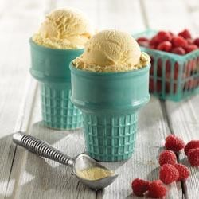
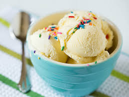

Vanilla Ice Cream
INGREDIENTS
1. Stir sugar, cream, and milk into a saucepan over low heat until sugar has dissolved. Heat just until mix is hot and a small ring of foam appears around the edge.
2. Transfer cream mixture to a pourable container such as a large measuring cup. Stir in vanilla extract and chill mix thoroughly, at least 2 hours. (Overnight is best.)
3. Pour cold ice cream mix into an ice cream maker, turn on the machine, and churn according to manufacturer's directions, 20 to 25 minutes.
4. When ice cream is softly frozen, serve immediately or place a piece of plastic wrap directly on the ice cream and place in freezer to ripen, 2 to 3 hours.
DIRECTIONS
- 3/4 cup white sugar
- 1 cup heavy whipping cream
- 2 1/4 cups milk
- 2 teaspoons vanilla extract